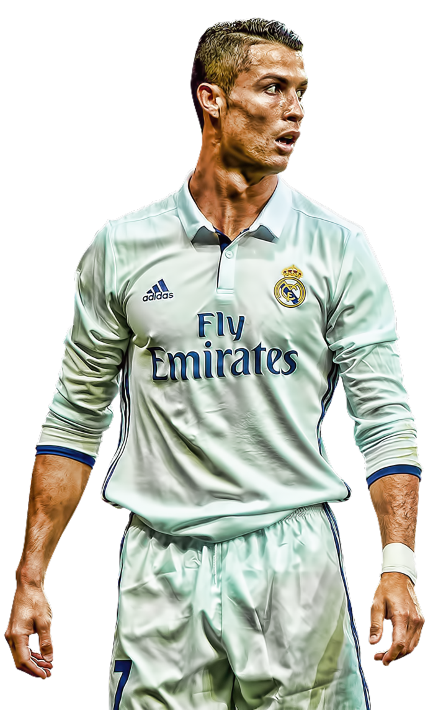
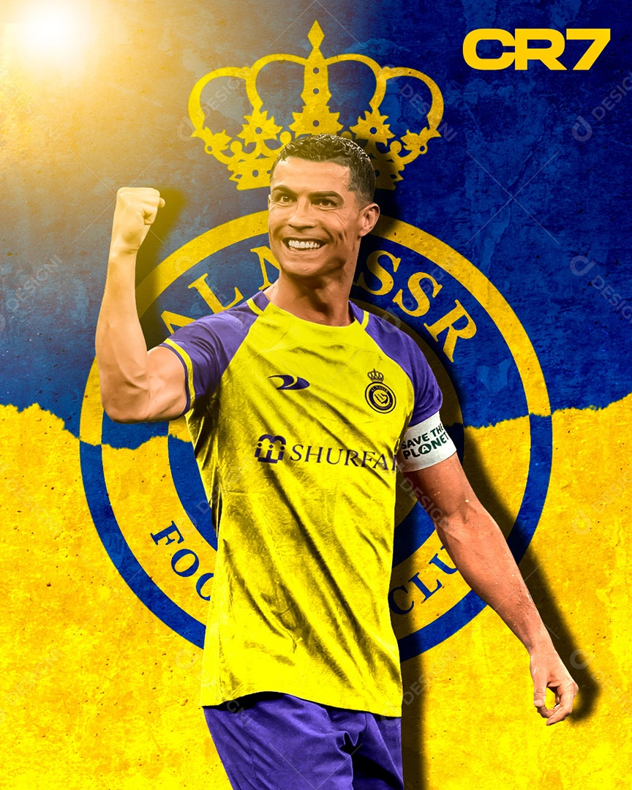
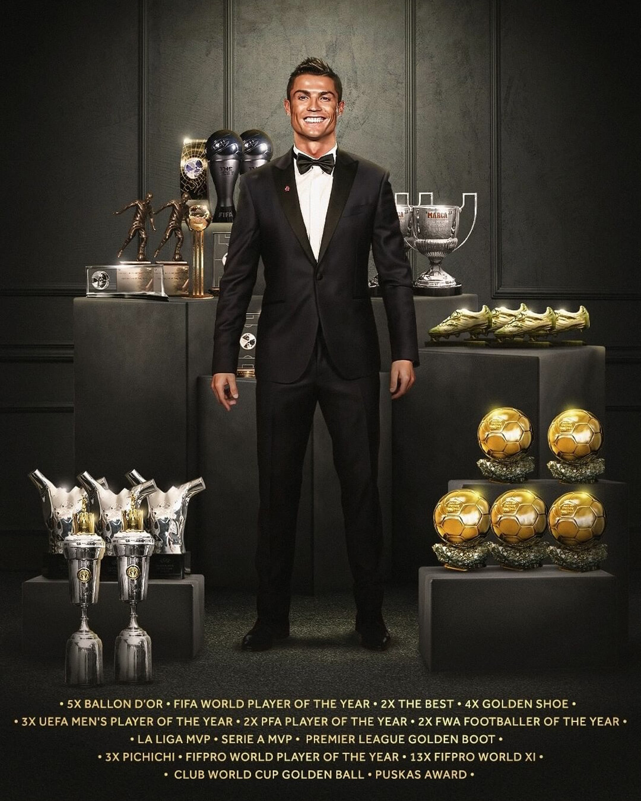
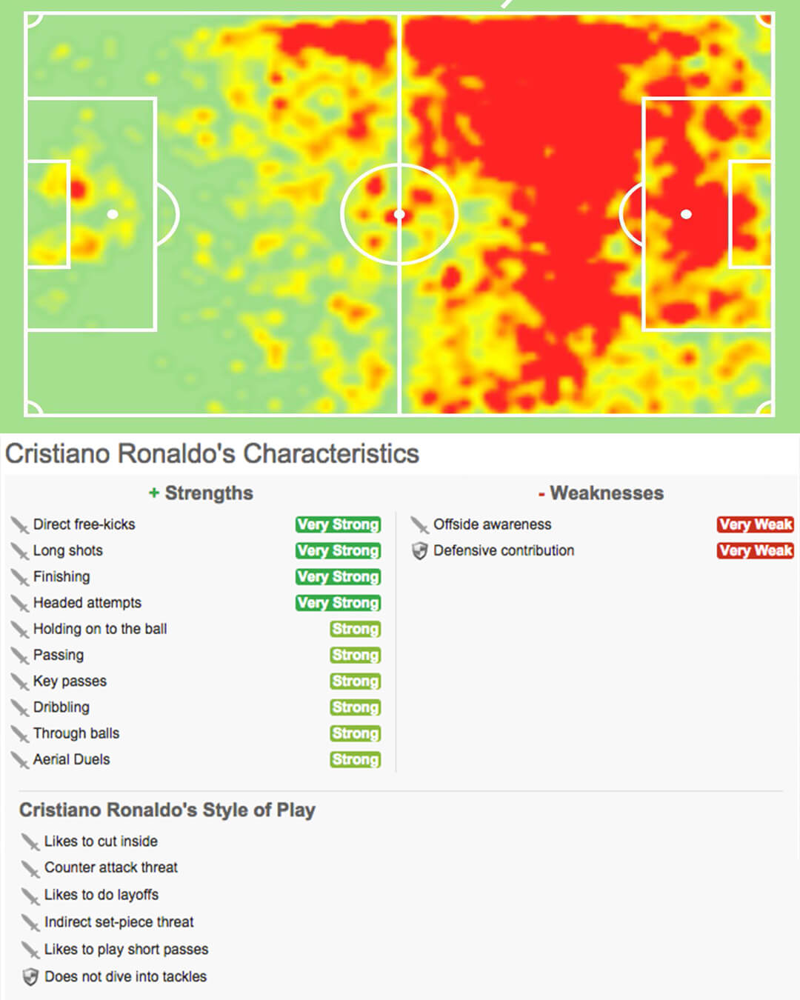
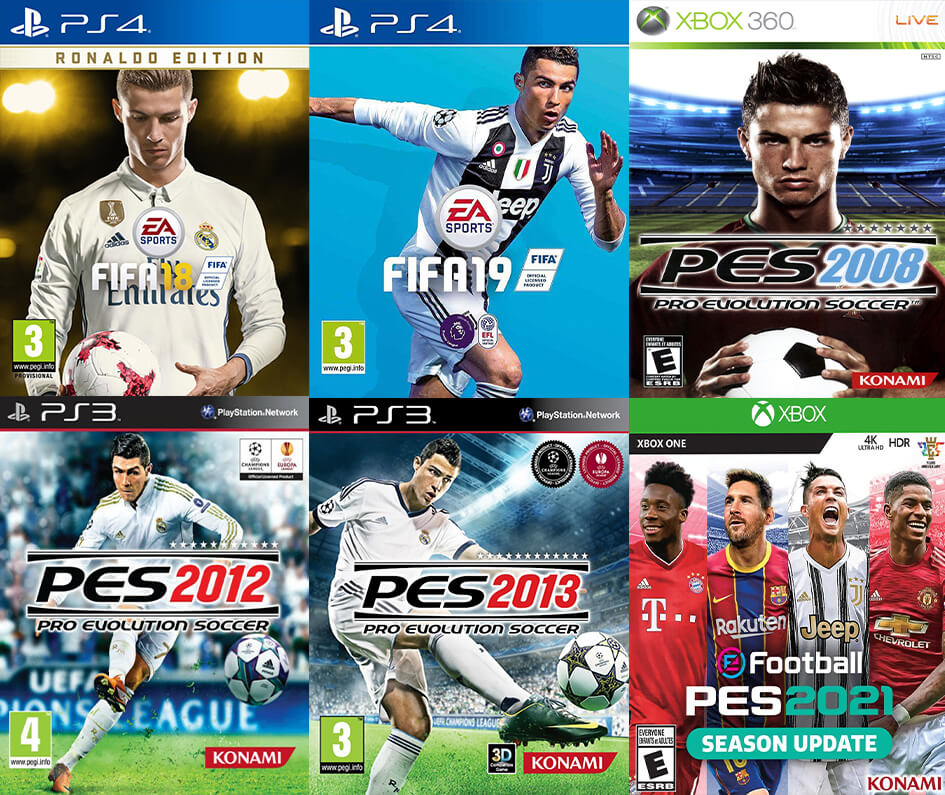
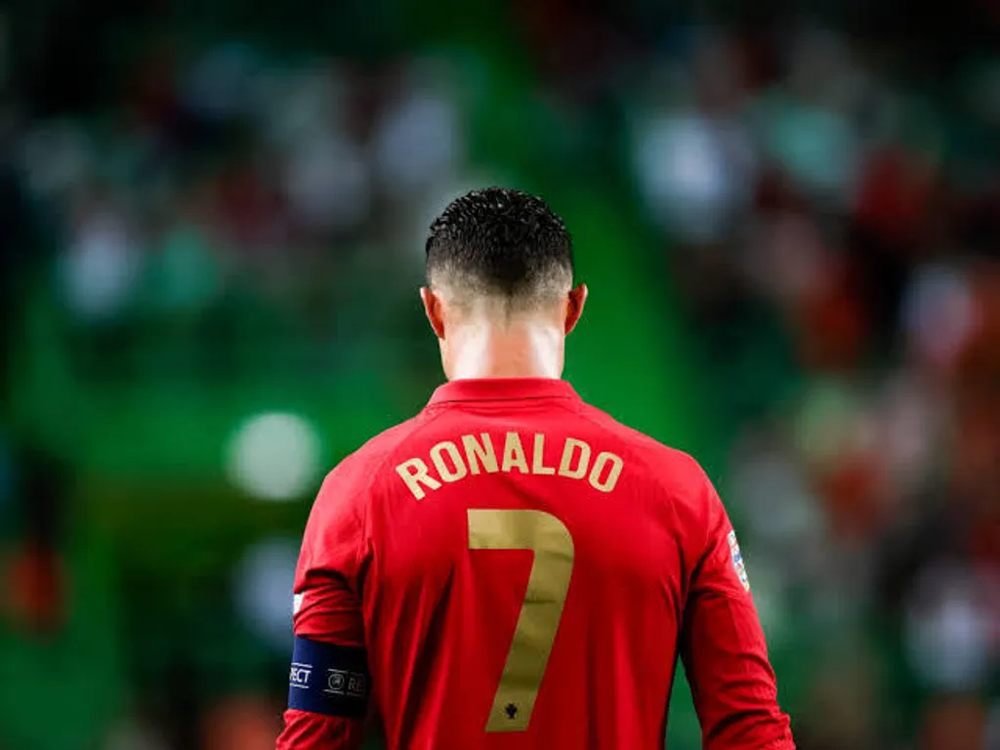

Cristiano Ronaldo
Vejo o futebol como uma arte e todos os jogadores são artistas.
Se você é um artista de ponta, a última coisa que faria é pintar um
quadro que outra pessoa já pintou.
Vejo o futebol como uma arte e todos os jogadores são artistas.
Se você é um artista de ponta, a última coisa que faria é pintar um
quadro que outra pessoa já pintou.

Ronaldo assinou com o gigante inglês Manchester United em 2003. Ele foi uma sensação instantânea e logo passou a ser considerado um dos melhores atacantes do esporte. Sua melhor temporada com o United veio em 2007–08, quando marcou 42 gols e ganhou a Chuteira de Ouro como artilheiro da Europa. Após ajudar o United a conquistar o título da Liga dos Campeões em maio de 2008, Ronaldo conquistou o prêmio de Melhor Jogador do Mundo da FIFA. Ele retornou ao clube em 2021, continuando a demonstrar sua veia artilheira na Premier League e na Liga dos Campeões antes de sua saída no final de 2022.


Ronaldo chegou ao Real Madrid por uma taxa de transferência recorde de £80 milhões. Seu poder de fogo continuou em sua nova equipe, quebrando recordes temporada após temporada. Durante sua passagem histórica, tornou-se o maior artilheiro de todos os tempos do clube. Liderou o Real Madrid na conquista de quatro títulos da Liga dos Campeões da UEFA em cinco anos (incluindo três consecutivos) e conquistou mais quatro prêmios Ballon d'Or. Sua rivalidade e genialidade em campo solidificaram seu status como uma verdadeira lenda do futebol.
Cristiano Ronaldo juntou-se à Juventus em julho de 2018. Apesar da idade, manteve seu ritmo impressionante de gols. Em sua primeira temporada, conquistou a Serie A e a Supercopa Italiana. Nas temporadas seguintes, quebrou recordes no futebol italiano, tornando-se o jogador mais rápido a atingir a marca de 100 gols pelo clube e terminando como artilheiro do campeonato (Capocannoniere) na temporada 2020-21.


Em janeiro de 2023, Cristiano Ronaldo assinou com o clube saudita Al Nassr, marcando o início de uma nova era no futebol asiático e atraindo os olhares do mundo todo para a Liga Profissional Saudita. Imediatamente assumiu a faixa de capitão e, em 2023, guiou o clube ao título da Copa dos Campeões Árabes. Com fome de bola inesgotável, ele terminou o ano de 2023 como o maior artilheiro do futebol mundial com 54 gols, e até 2026 continuou acumulando prêmios de artilheiro e atualmente com 973 gols oficiais na carreira.
Ronaldo fez sua estreia pela seleção principal de Portugal em agosto de 2003. Ele se tornou o capitão absoluto da equipe em 2008. Em 2016, liderou Portugal ao título da Eurocopa, o primeiro grande torneio internacional do país. Em 2019, levantou a taça da primeira edição da UEFA Nations League. Tornou-se o maior artilheiro de seleções masculinas da história do futebol, ultrapassando a marca incrível de 130 gols internacionais e batendo o recorde absoluto de participações e gols ao jogar sua sexta Eurocopa em 2024.



 Manchester United
Manchester United
 Real Madrid
Real Madrid
 Juventus
Juventus
 Al Nassr
Al Nassr
 Portugal
Portugal
Ronaldo é um goleador versátil que gosta de cortar pela ala esquerda
e chutar com seu pé direito favorito. Sua habilidade no cabeceio
está além do que a maioria dos jogadores consegue alcançar, sustentada por uma impulsão fora do comum.
Também é importante notar que sua perna "ruim" (esquerda) é extremamente letal.
Quando se trata de pênaltis, Ronaldo se mostra superior;
sempre calmo e concentrado para marcar até mesmo nos momentos de maior pressão.
Ao longo dos anos, Ronaldo adaptou profundamente seu estilo de jogo
à medida que envelhecia e mudava de equipe. No Manchester United (na juventude),
ele não era o artilheiro fixo que conhecemos hoje. Ele era um ponta driblador
e veloz, que frequentemente recuava para buscar a bola e orquestrar ataques.
Ele nos hipnotizava com chutes potentes de longa distância e pedaladas imparáveis.
No Real Madrid, seu papel gradualmente se transformou no de uma "máquina de gols".
Seu posicionamento, leitura de espaço na grande área e letalidade em um ou dois toques
o tornaram o maior finalizador do mundo moderno. Na Juventus, Al Nassr e na Seleção,
sua capacidade de atuar como o típico "Camisa 9" prolongou sua carreira brilhante
no mais alto nível.


Cristiano Ronaldo foi destaque como a grande estrela da capa das maiores franquias de jogos de futebol. Sua estreia como estrela da capa começou em 2008 no PES 2008. Ele voltou a assinar como rosto da franquia Pro Evolution Soccer (PES) nas edições de 2012 e 2013. Em 2018, Ronaldo fez sua estreia como a estrela principal do maior jogo de futebol do mundo, o FIFA 18, inclusive com a "Edição Ronaldo". Ele também esteve na capa do FIFA 19. Recentemente, ele se envolveu como embaixador e investidor do novo simulador de futebol "UFL", reforçando sua marca gigantesca no mundo dos jogos.

Um desafio rápido para testar seus reflexos e conhecimento!